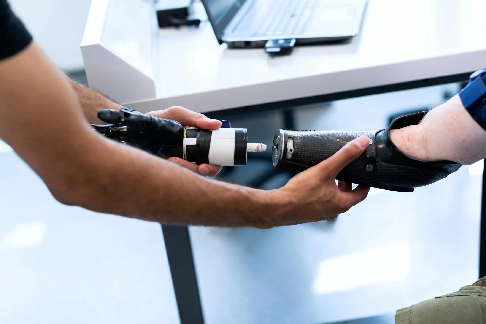

What is ArcLight
ArcLight is the first Neurorobotics company to develop functional and lifelike huamanoid robots that can adapt and evolve depending on its environment.
ArcLight is the first Neurorobotics company to develop functional and lifelike huamanoid robots that can adapt and evolve depending on its environment.
To provide a companion or a helper by creating humanoid robots that offer support and assistance to people.
We strive for a future where everyone can have easier and fulfilling lives.
ArcLight androids can be trained for specific roles to meet there owners goals, but all ArcLight androids have the basic human attributes and abilities such as locomotion, communication, facial expression, artificial emotions, critical thinking, etc.
|  | The Basics | |
|---|---|---|
| Steps | Action | Outcome |
| 1. Design | Plan and design the specific use case of the Android (e.g. healthcare, factory worker, police). | An android that excel in a specific role |
| 2. Hardware planning | Integrating necassary artificial human sensors (e.g. vision, but not pain receptors) and assemble the skeletal and artificial epidermis. | A near perfect resemblance of all observable human atributes. |
| 3. AI components | Use the ArcLight neurodata technology to read human brain data and use the data to train an androids local neural network. | A perfect android that can do what humans can and cannot. |
| 4. Testing | use stress testing methods to identify failures in the machine | Ensures that the android works as expected. |